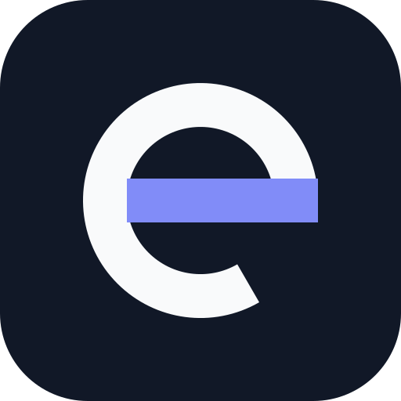
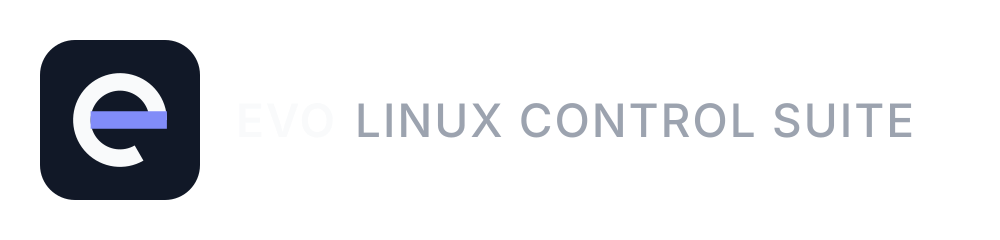
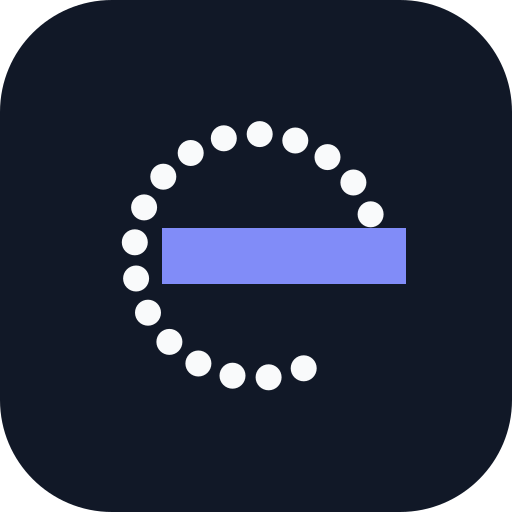
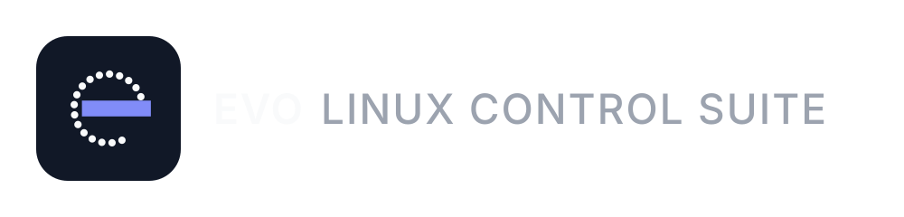
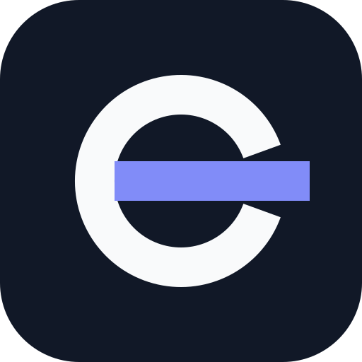
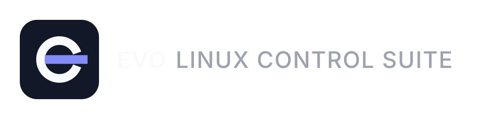

Tres direcciones nuevas, todas construidas sobre la "e" circular del estilo evo. El lockup pasa a una sola línea: EVO LINUX CONTROL SUITE al mismo tamaño y nivel, sin el wordmark sobredimensionado.

La "e" como letraAnillo monolineal con apertura de 60° y crossbar índigo. La lectura es tipográfica primero: una "e" geométrica, no un diael. Es la más cercana al estilo evo sin copiar su glifo.


La "e" como hardwareEl anillo son los LED alrededor del diael del EVO 4; el crossbar índigo es la señal. Es la más "de producto": conecta directamente con el hardware que controla la suite.


La "e" como controlEl anillo se abre a la derecha y el crossbar índigo sale hacia afuera: el plano de control enviando señal al hardware. La más dinámica de las tres.
